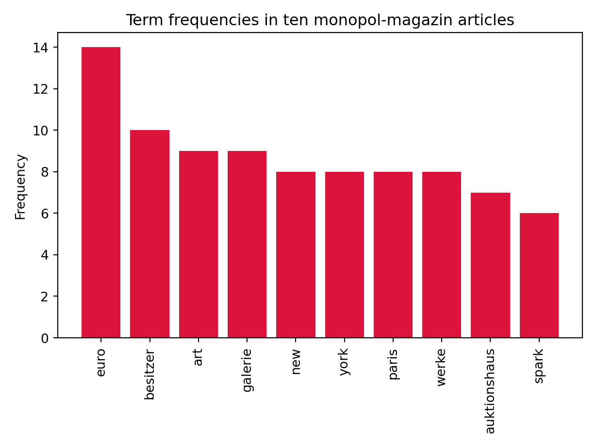

library(reticulate)
options(reticulate.repl.quiet = TRUE)
use_python("~/Library/r-miniconda-arm64/bin/python")Introduction
A Bag of Words is a form of vectorized text representation that describes the multiplicity of words in a text corpus. Thereby, a Bag of Words only considers the number, but not the grammar or the order in which words are implemented in a text corpus. This is also the name-giving core property of the Bag of Words: `The model is only interested in whether and in which frequency specific words occur in a text corpus, but not where they are implemented in which grammatical way in a text corpus. Accordingly, the Bag of Words approach is often used to classify documents where the (frequency of) occurrence of specific words can be used as a classification criterion e.g. of documents (Albrecht, Ramachandran, and Winkler 2020).
Loading libraries and data
As a simple introduction to natural language processing (NLP) we want to use Python to analyze various online accessible articles from the art magazine Monopol from the section Art Market (see). For this we need the Pythons libraries pandas, nltk, string, re and for the later backup of our collected data the library openpyxl. Since I myself use RStudio as an IDE (Integrated Development Environment) for Python, I load the R package reticulate into an R environment and turn off the package (for me annoying) notification function. Finally, I use the use_python() function to tell R under which path my Python binary can be found. Users working directly in Python can omit this step.
In a further step, the above-mentioned Python libraries are loaded into the working environment. If the libraries have not yet been installed, this can be done from R with the function py_install(). In Python the libraries can be installed directly with the function pip install function.
import pandas as pd
import openpyxl
import nltk
import string
import reNext, we load the data obtained in Lesson 1 on web scraping (see) into our workspace with the help of the function read_excel().1 To avoid the creation of a new column with the row indices the argument index_col is set to 0. As engine to be used openpyxl is further specified.
df = pd.read_excel(r'output.xlsx', index_col=0, engine='openpyxl')Data preparation
To create a bag of words, a list named texts with ten elements is generated from the column vector texts of the data frame df. Each element contains an article i.e. a body of text. A shorter example represents the article with the name “Venice painting of Monet should bring in millions”, which is deposited in the second element (texts[1]) of the list.
texts = df['texts'].tolist()
#texts[1]We specify a for-loop that transforms all words of the ten text corpora into lowercase. To check the effectiveness of the for-loop, we again output the 2nd element of the list texts.
for i in range(len(texts)):
texts[i] = texts[i].lower()
#texts[1]In a further step, stopwords (such as “and”, “or”, “the” or “that”) are removed from the text corpora using a function it can find on Stack Overflow. stopwords are those words that are ignored in full-text indexing such as that of the word of bags. This is to be done because stopwords occur very frequently on the one hand and on the other hand usually have no relevance for capturing the document content.
Since the text corpora originate from a German-language art magazine, we write into the object stop_words all those German stopwords, which the library nltk supplies.2 In the case that further stopwords are to be defined, this can be done further with the function append().
from nltk.corpus import stopwords
stop_words = stopwords.words('german')
new_stop_words = ['de','wurde','etwa','mai','gab']
stop_words.extend(new_stop_words)
def remove_stopwords(texts):
output_array=[]
for sentence in texts:
temp_list=[]
for word in sentence.split():
if word.lower() not in stop_words:
temp_list.append(word)
output_array.append(' '.join(temp_list))
return output_array
texts=remove_stopwords(texts)In order to ignore the punctuation and numbers of the text corpora in the context of our analysis, two further for-loops are specified: The former removes all punctuation marks using the sub() function of the re library, the latter splits the text corpora into their individual tokens and filters those that are alphabetic but not numeric.
#remove punctuation
texts = [re.sub('[{}]'.format(string.punctuation), '', i) for i in texts]
#remove numbers
texts = [[word for word in texts.split() if word.isalpha()] for texts in texts]Counter with Bag of Words
Now the actual bag of words can be created. We import the function Counter() of the collection-library and add the tokens of the ten articles in a single list called texts with the sum()-function. We then pass this list to the counter() function of the collections library and store the results in the object bow (bag of words). In it we find the counts of the tokens of our ten text corpora.
from collections import Counter
texts= sum(texts, [])
bow = Counter(texts)As we are mainly interested in the most frequently occurring words in the ten articles, we specify a bar plot with the help of the matplotlib-library. To do this, we extract the number and names of the ten most frequent terms.
y = [count for tag, count in bow.most_common(10)]
x = [tag for tag, count in bow.most_common(10)]
import matplotlib.pyplot as plt
plt.clf()
plt.bar(x, y, color='crimson')
plt.title("Term frequencies in ten monopol-magazin articles")
plt.ylabel("Frequency")
plt.xticks(rotation=90)([0, 1, 2, 3, 4, 5, 6, 7, 8, 9], [Text(0, 0, 'euro'), Text(1, 0, 'besitzer'), Text(2, 0, 'art'), Text(3, 0, 'galerie'), Text(4, 0, 'new'), Text(5, 0, 'york'), Text(6, 0, 'paris'), Text(7, 0, 'werke'), Text(8, 0, 'auktionshaus'), Text(9, 0, 'spark')])plt.tight_layout() # change the whitespace such that all labels fit nicely
plt.show()
As we can see, the most frequently represented words of the ten articles of the art magazine monopol-magazin are connoted both economically (“euro”, “owner”, “auction house”) and culturally (“art”,“galerie”,“werke”,“auction house”). In this way, for example, a classifier without knowledge of the rubric of the text corpora could assign them to the section art market.
Limitations of Bag-of-Words
As we have seen, the bag of words approach is efficient and easy to implement, but it also has disadvantages: If the Bag of Words approach is used for the classification of large document sets, the increasing number of tokens and documents results, among other things, in very large data matrices that have a lot of zero values because specific words are rarely mentioned. This circumstance complicates the interpretation of the results of a Bag of Words considerably.
Furthermore, the Bag of Words approach cannot interpret textual data in terms of meaning. For example, consider the two sentences “I love watching series on Netflix and hate visiting art museums” and conversely “I love visiting art museums and hate watching series on Netflix”. The bag of words approach leads to similar vectorized representations even though the two sentences have contrasting inhaptic meanings.
Deep learning models such as BERT address these key weaknesses of the bag of words approach.
References
Albrecht, Jens, Sidharth Ramachandran, and Christian Winkler. 2020. Blueprints for Text Analysis Using Python: Machine Learning-Based Solutions for Common Real World (NLP) Applications$dJens Albrecht, Sidharth Ramachandran and Christian Winkler. First edition, revision. Bejing Boston Farnham Sebastopol Tokyo: O’Reilly.